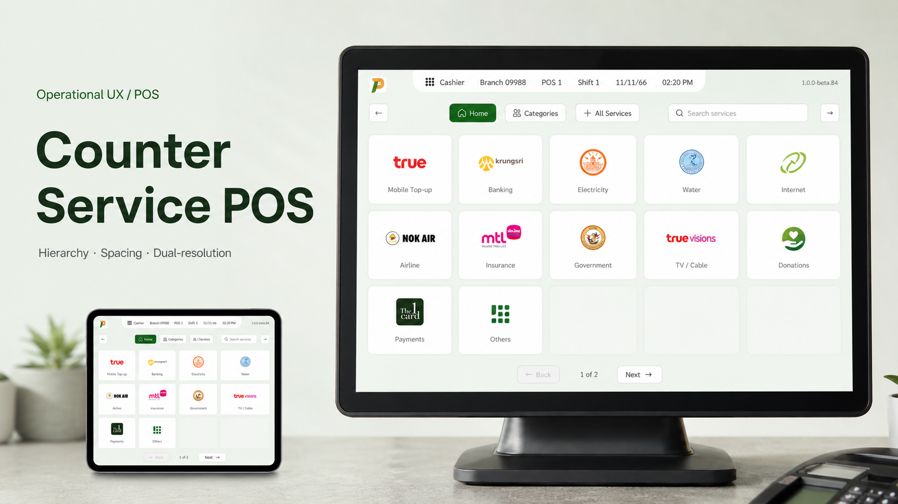
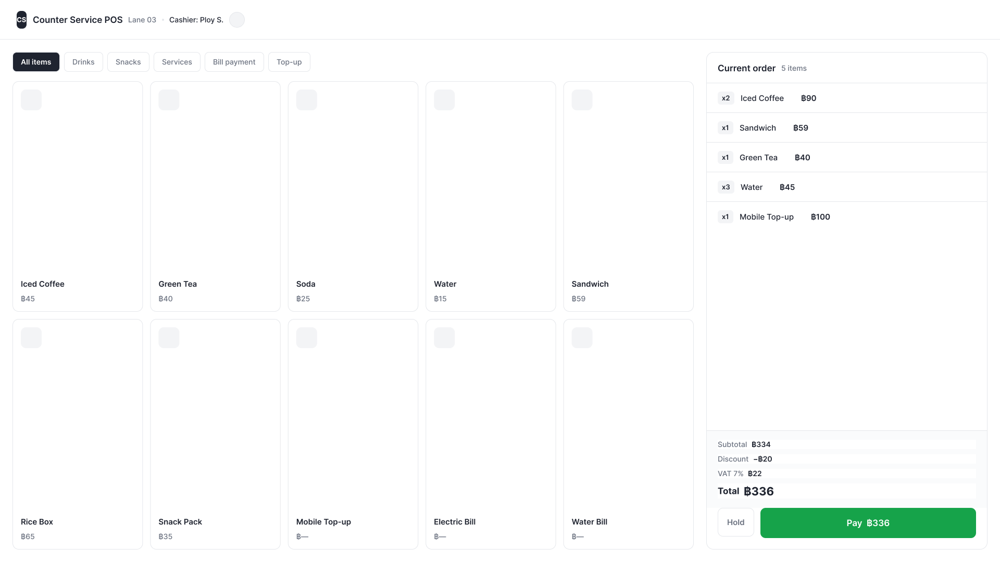

Counter Service POS
Everything was locked except spacing and contrast — and cashiers run on muscle memory, so the screen had to read better without making a single hand relearn where anything was.

The setup
Cashiers process hundreds of transactions per shift. They do not read every screen from scratch — they rely on positions, repeated flows, and muscle memory built over time.
The interface needed clearer hierarchy and more consistent spacing. But the flow was fixed. The button positions were fixed. The brand identity was fixed. The screens ranged from 800×600 to 1920×1080.
Everything was locked except spacing, hierarchy, and contrast.
What I actually did
Improve hierarchy without moving the controls
The interface had uneven spacing, weak grouping, and competing visual weight. During routine transactions, important information had to stand out without changing the controls cashiers already knew.
I kept the button positions in place and adjusted hierarchy through spacing, grouping, contrast, and clearer separation between transaction areas and action areas.
The result is less dramatic than a full redesign. That was the point — a cashier should not have to relearn the screen to read it better.
Part 1The proposed interface — the same controls, now grouped and weighted so the next action reads first.

Build layout rules for two screen realities
The same POS experience had to work across legacy 800×600 terminals and wider 1920×1080 displays. A simple scale-up or scale-down would either crowd the small screen or overinflate the larger one.
I designed separate layout profiles for compact and expanded screens. The compact version prioritized essential metadata and tighter rows. The wider version gave more room to transaction details, product areas, and payment actions without simply enlarging everything.
Two layout profiles meant more design maintenance. But one flexible mockup would have hidden the real hardware constraint.
Part 2The same screen on legacy 800×600 hardware — a compact profile that keeps the essentials legible without crowding.

What it shipped
It delivered as a review-approved spec: two layout profiles — compact and expanded — with hierarchy, spacing, and contrast rules defined per screen size, and every control left exactly where cashiers' hands already expected it.
What I'd do differently
This project needs proof. The entire design rests on one claim: better hierarchy and spacing speed up checkout without moving a single control. If it reaches live testing, I'd log keystroke timing on the terminals — real transaction-speed data, no cashier interrupted.